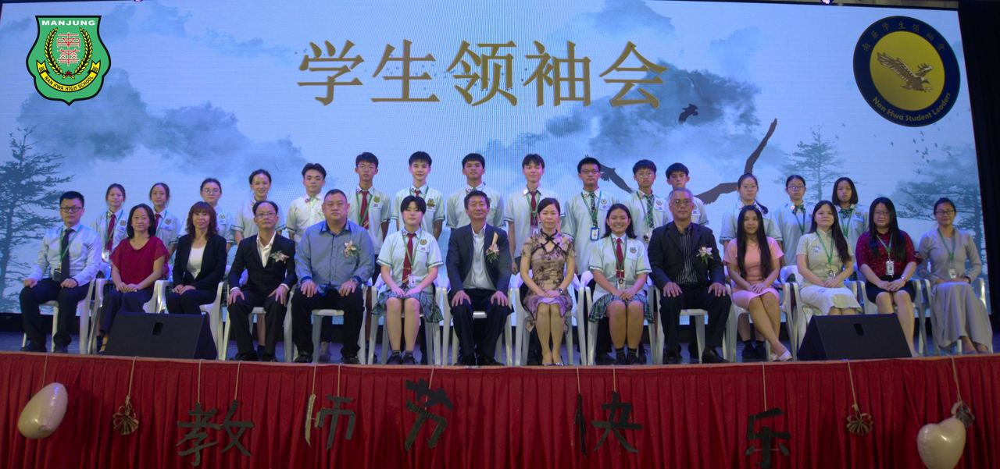
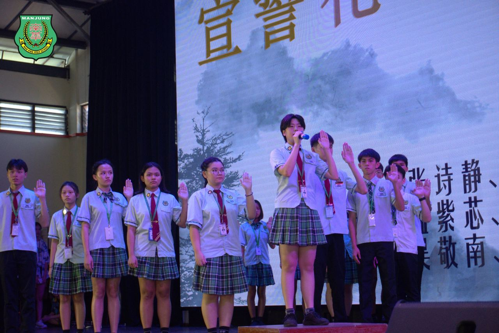
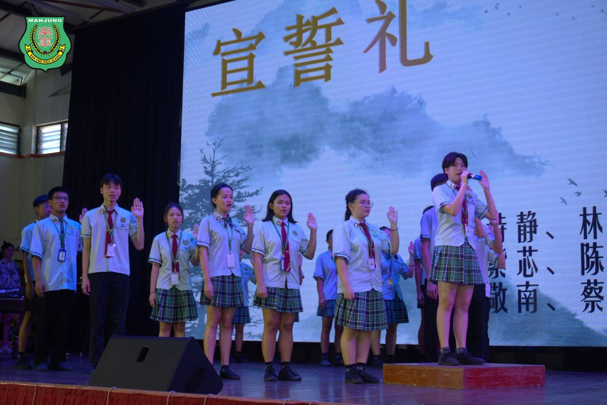
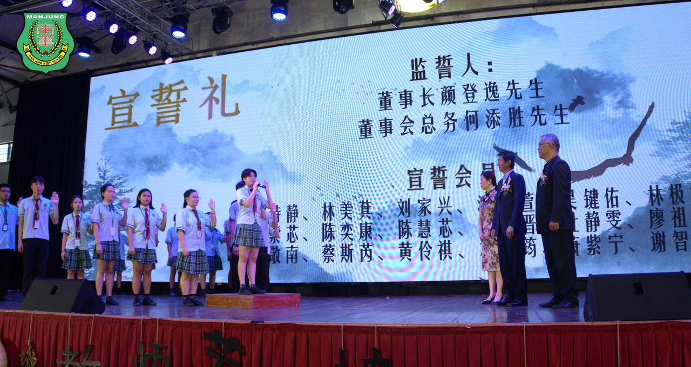
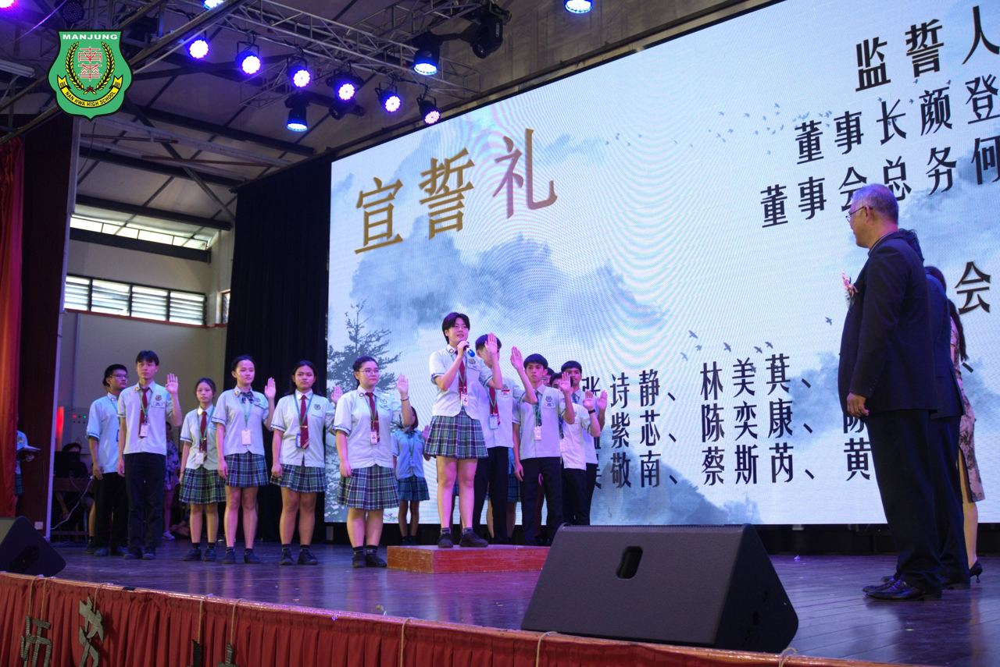
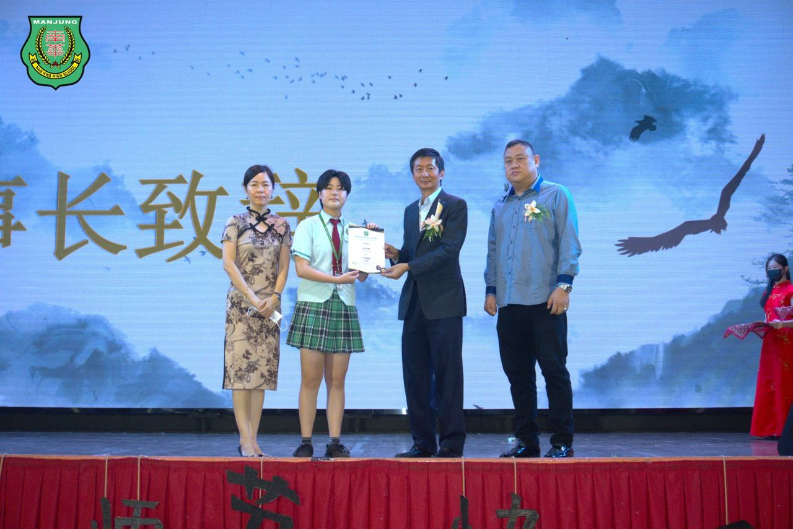
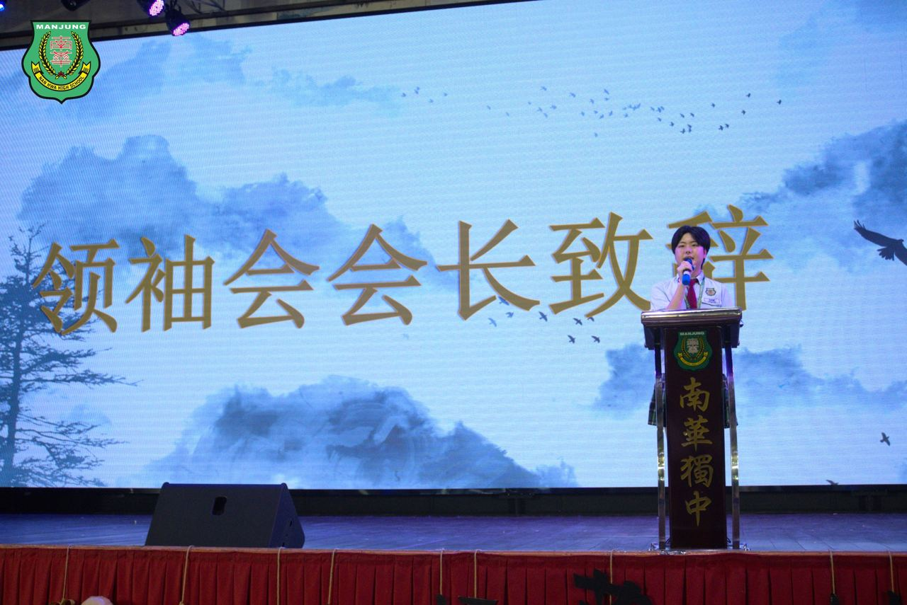
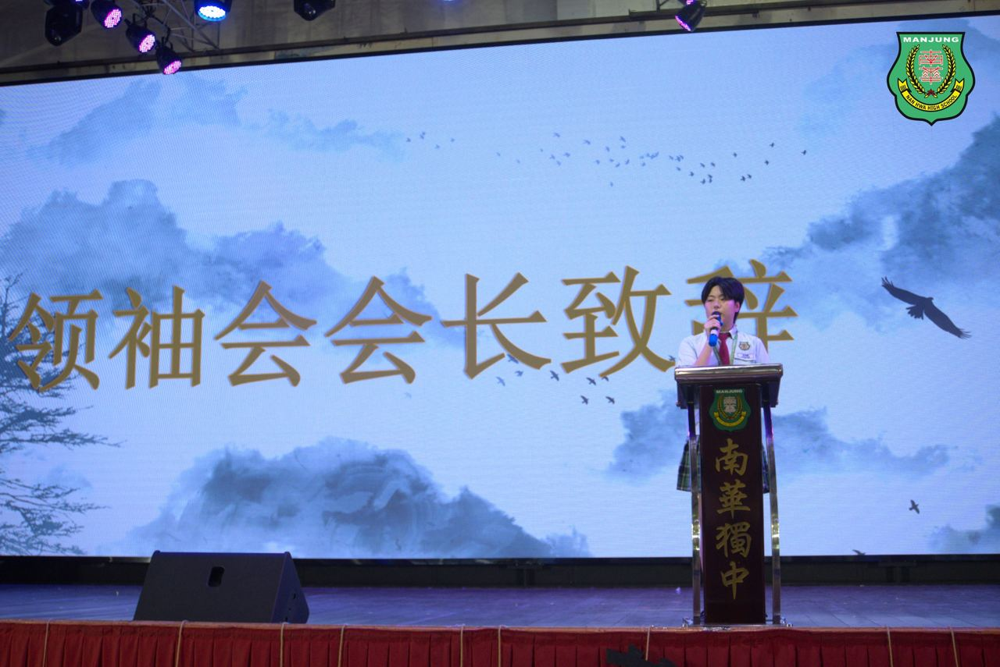

南华独中培养学生领袖人才
南华独中培养学生领袖人才
第一届学生领袖会正式成立
南华独中秉持着“培养‘迎领’21世纪中华文化素养领袖人才”办学愿景，时刻将培养和促进学生领袖才能摆于首要任务，于今年五月初成功举办了首届学生领袖营，随后正式宣布成立第一届学生领袖会。在董事长颜登逸先生、董事总务何添胜以及校长陈丽冰博士的见证下，隆重举行了第一届学生领袖会就职仪式，这标志着学生领袖会的诞生和为学生们提供全面成长的平台。
在激动人心的就职仪式上，在董事长颜登逸先生、董事总务何添胜先生以及校长陈丽冰博士的监誓下，学生领袖会会长张诗静率领新一届会员庄严宣誓就职，并荣幸地接受了象征着责任和使命的徽章与委任书。仪式充满庄重和崇高感，将这一历史时刻刻画在了人们的心中。
颜登逸董事长在致辞中强调，学生领袖会的成功将依赖于三大关键要素：“大格局、才德兼备与组织能力”。他指出，学生领袖应当具备高瞻远瞩的大格局，拥有国际视野和卓越的远见；同时，才德兼备也是不可或缺的，培养品德与才华并重，为校园发展贡献力量；最后，组织能力是引领其他学生一同成长的重要能力，他们应当成为全校学生的模范与楷模。
南华独立中学一直致力于为学生提供多元化的成长机会，第一届学生领袖会的成立正是学校对此承诺的体现。通过领袖营和领袖会的举办，学生将有机会锻炼领导才能、培养团队合作能力，以及展示个人的社会责任感。另外，校方也将兑现学生领袖营的承诺，启动营会中所提出的三项与学校发展相关的“天使计划”提案，邀请学生共同加入学校的建设，成为构筑校园基石的一份子。
南华独立中学以其不懈的努力，致力于为学生打造一个全面发展的校园环境。第一届学生领袖会的正式成立，无疑将为学校的领袖培养计划注入新的活力与希望。
与会嘉宾包括董事长颜登逸先生、副董事长拿督叶绍利、总务何添胜董事、副总务林道祥董事、校长陈丽冰博士、家长教师联合会主席叶燕妮女士，以及校董会理事陈惠芝女士等。
#学生领袖会 #就职仪式
#大格局 #才德兼备 #组织能力
#南华独中 #曼绒 #实兆远







